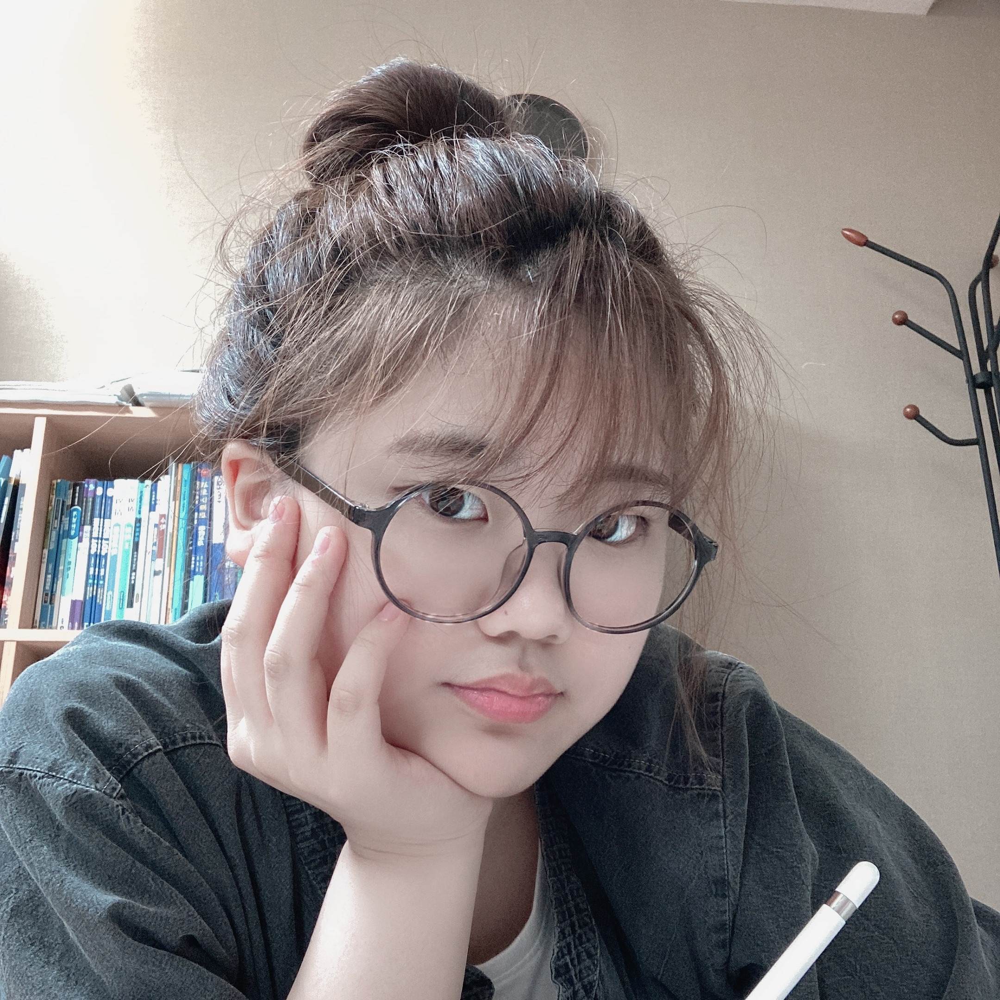

{ Hello, World! }

{ 학력 }
월촌중학교 졸업(2019.2)
하나고등학교 재학중(2019.3~)
{ 고교 내 대표 활동 }
2019
수학 창체동아리 MO 부원(2019.4~), 동티 디자이너 재직(2019.6)
생화학 집현 <알켐> 전 행수(2019)
2019 HAS 10th Symposium Presenter: "Ethical Use of AI Biometric Recognition System" Present, WTD System 설계
2019 하나학술제 학술연구분야 "Voronoi Diagram을 활용한 최적의 화재 대피 경로 도출" 발표
2020
물리엔진 기반 게임 개발 자율동아리 LOADING 동아리장(2020.4~), 동티 디자이너 재직(2020.5)
AP Computer Science A : "다변량 단순 회귀 모델에 기반한 교내 매점 방문 최적 시간대 분석 프로그램" 제작 및 발표(2020)
AP Physics C : Mechanics : "작은 각 근사 및 회전운동 고려 유무에 따른 단진자 운동의 주기 오차 비교 분석" 발표(2020)
"이륜 전동휠의 안정적 경사면 주행을 위한 무게 중심 제어" 과제 연구 R&E 진행중(2020.5~)